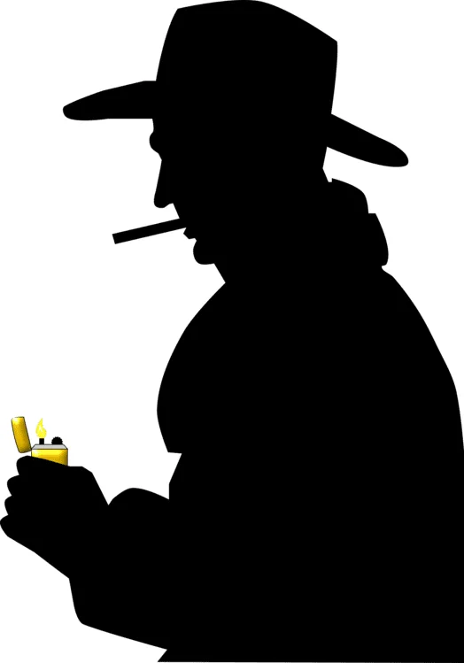
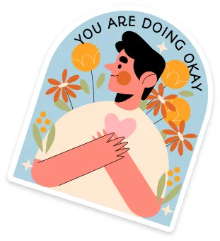
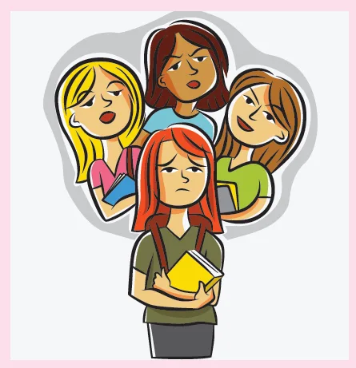

Peer pressure
Lesson 3 — Reading
9Five stops in 45 minutes
- 🎬
Warm-up
What is peer pressure?
5 min - 🔤
Pre-reading
Task 1 · key words
10 min - 📖
While-reading
Tasks 2–4
20 min - 💬
Post-reading
Task 5 · your experience
7 min - ✅
Wrap-up
Exit ticket
3 min
Warm-up
What is peer pressure?
5 minutesPeer pressure
No internet? Read the four statements on the next slide aloud — groups vote TRUE or FALSE and explain.
What did the video say?
- Teenagers are considered easily affected by peer pressure. FALSE
- Positively, peer pressure can motivate us to try and become better. TRUE
What did the video say?
- Social media always brings stress to us when we see other peers having success and comfortable lives. FALSE
- Defining a clear life goal and respecting yourself and others are effective ways to avoid peer pressure. TRUE
Pre-reading
When friends influence you
10 minutesHave your friends ever made you do something you do not like? If yes, give an example.
🗣️ Once, my friends made me … · I didn’t want to …, but …
🤔 How did you feel? What did you do next?
💡 You can use a made-up example if you prefer.



While-reading
Teen’s Life: I don’t want to be the odd one out!
20 minutesI don’t want to be the odd one out!
‘My parents don’t want me to hang out with my friends from school. They think those friends have a bad influence on me. They aren’t happy that instead of going home after school, we go to games centres to play video games. But I think it’s fun, and I don’t want to lose my friends,’ Thanh, 17.
Van’s story · paragraph A
‘One day I coloured my hair and painted my finger nails. My parents got so angry with me. I know that this is not allowed at school, but all the girls in my group of friends did the same. I don’t want to be the odd one out!,’ Van, 16.
[A] The emails we have received from teenagers this week point to the effects of peer pressure, which is when you do things because you want to be accepted or valued by your friends. If teens fail to do what their group of friends want them to do, they may not be accepted or may even be bullied.
Paragraphs B and C
[B] In many cases, peer pressure can lead to depression, low self-confidence, distance from family and poor school performance. It can also lead to bigger social issues. It was reported that 70% of teenage smokers surveyed in the US said that they started smoking because they had friends who were smoking.
[C] It is not always easy to stand up to peer pressure, but sooner or later you need to decide what is best for you. Choose the right friends, learn to say no when you don’t feel comfortable and don’t hesitate to talk to an adult when the situation looks dangerous. And remember it’s sometimes OK to be ‘the odd one out’.
Match 1–4 with a–d · 6 min
1. hang out d
2. pressure c
3. depression b
4. self-confidence a
a. a belief in your own ability to do things well
b. the state of feeling very sad and without hope for the future
c. the act of trying to force someone to do something by arguing, persuading, etc.
d. to spend a lot of time in a place
Which paragraph?
1. The definition of ‘peer pressure’ A
2. How peer pressure can cause social issues B
3. Dealing with peer pressure C
4. The possible problems facing teens if they do not follow their peers A
Question 1
1. What is the similarity between Thanh and Van? C
A. They both changed their appearance.
B. They both want to be different from their friends.
C. Their parents do not approve of their behaviour.
Question 2
2. Which is NOT mentioned in the article as a consequence of peer pressure? A
A. Encouraging someone to fight.
B. Lack of a close relationship with family members.
C. Lack of confidence about what you can do.
Question 3
3. What was reported about the effects of peer pressure on teenagers in the US? C
A. Fifty-five per cent of them started to smoke because of peer influence.
B. Seventy per cent of them were drinking alcohol with their friends.
C. More than two-thirds of teen smokers started the habit under the influence of their friends.
Question 4
4. According to the article, what is one way of dealing with peer pressure? B
A. Going to see the right doctor.
B. Not always saying yes to your friends.
C. Choosing friends who say no when they feel uncomfortable.
Post-reading
Your experience
7 minutesHave you, or has someone you know, experienced any of the problems mentioned in this article?
📅 When did it happen? Where?
😟 How did you feel about it?
✅ What did you do?
My hairstyle story
I used to wear my hair in a ponytail to school until my friends told me that it was outdated and some of them even laughed at my hairstyle. I became so ashamed of myself and my hairstyle that I dyed my hair blonde, just to make myself look ‘cool’ to my friends.
But to be honest, it cost me a lot of money and time to dye and take care of my hair, and when I looked at myself in the mirror every day, I didn’t like it at all. So I stopped colouring my hair and started ignoring comments about my hairstyle.
Before you leave…
1. What is peer pressure? doing things because you want to be accepted or valued by your friends
2. Name two effects of peer pressure. depression · low self-confidence · distance from family · poor school performance
3. Give one way to deal with peer pressure. choose the right friends · learn to say no · talk to an adult
Homework
1. Do the Reading exercises in the workbook.
2. Write 3–4 sentences: how can teens stand up to peer pressure?
3. Prepare for Lesson 4 — Speaking: experiencing peer pressure.